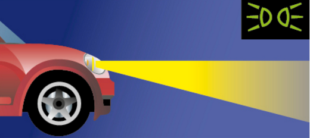
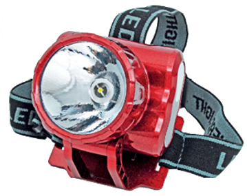
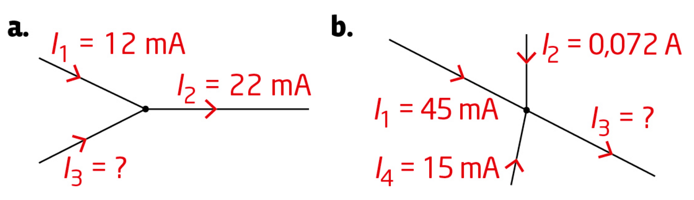
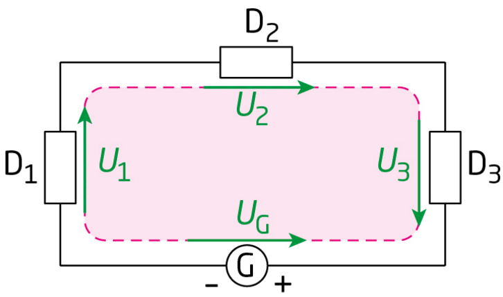
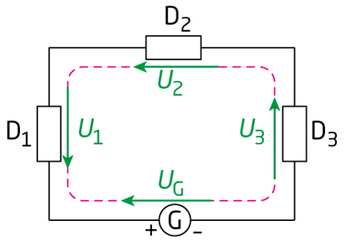
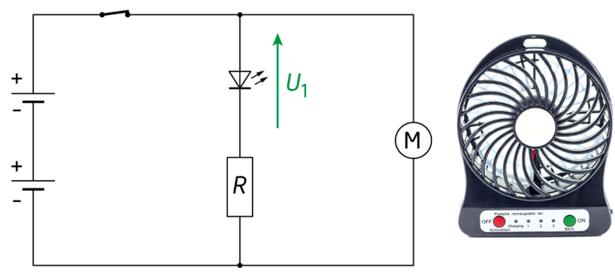
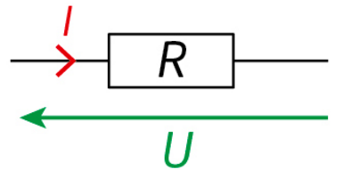
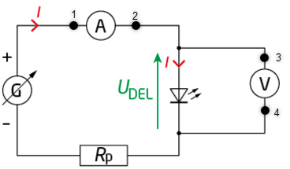
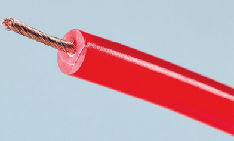
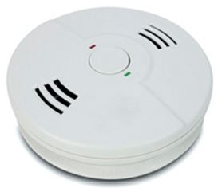

Signaux et capteurs
Thème : Ondes et signaux · C. Poirault-Gauvin
- Mesurer une tension et une intensité à l'aide d'un voltmètre et d'un ampèremètre. Schématiser un circuit électrique simple.
- Utiliser les lois des circuits électriques (loi des mailles, loi des nœuds).
- Tracer et exploiter la caractéristique tension-intensité d'un dipôle.
- Identifier le comportement d'un conducteur ohmique et vérifier la loi d'Ohm : U = R × I.
- Citer les limites de fonctionnement d'un dipôle. Lire les valeurs maximales sur une caractéristique.
- Identifier qu'un capteur résistif convertit une grandeur physique (température, éclairement…) en une variation de résistance électrique.
1. Signaux électriques et mesures
1. La tension électrique
Elle se mesure avec un voltmètre branché en dérivation (en parallèle) entre ces deux points.
Unité : le volt (V).
2. L'intensité du courant électrique
Elle se mesure avec un ampèremètre branché en série dans le circuit.
Unité : l'ampère (A).
3. Lois des circuits électriques
Exemple : UAB + UBC + UCA = 0
Exemple : I = I1 + I2
Dans une maille, on mesure Ugénérateur = 12 V et Urésistance = 8 V. Quelle est la tension Ulampe ?
⟹ Ulampe = 12 − 8 = 4 V
En un nœud, deux branches arrivent avec I1 = 0,3 A et I2 = 0,5 A. Quelle est l'intensité I qui repart du nœud ?
4. Dipôles en série et en dérivation
💡 En dérivation : les dipôles sont soumis à la même tension — ils sont reliés par des nœuds.
2. Caractéristique tension-intensité d'un dipôle
1. Conventions de signe
U et I sont orientés dans le même sens.
U et I sont orientés dans des sens opposés.
2. La caractéristique U = f(I)
Elle est obtenue en mesurant des couples (I ; U) pour différents réglages.
Chaque couple est un point de fonctionnement.
Sélectionne le type de dipôle pour voir sa courbe U = f(I)
3. Limites de fonctionnement
Au-delà de ces limites, le dipôle peut être détérioré ou détruit.
3. Conducteur ohmique et loi d'Ohm
1. Qu'est-ce qu'un conducteur ohmique ?
La tension U et l'intensité I sont proportionnelles.
2. Loi d'Ohm
R : résistance (Ω — ohm)
IAB : intensité du courant (A)
3. Calculs guidés
Une résistance R = 220 Ω est parcourue par un courant I = 0,1 A. Quelle est la tension U à ses bornes ?
Étape 1 — Formule à appliquer :
Étape 2 — Application numérique :
Étape 3 — Résultat avec unité :
Application : U = 220 × 0,1 = 22 V
Aux bornes d'un conducteur ohmique, on mesure U = 6 V et I = 30 mA = 0,03 A. Calculer R.
Étape 1 — Formule à appliquer :
Étape 2 — Application numérique :
Étape 3 — Résultat avec unité :
Application : R = 6 / 0,03 = 200 Ω
On applique U = 9 V aux bornes d'une résistance R = 330 Ω. Calculer l'intensité I en mA.
Étape 1 — Formule :
Étape 2 & 3 — Résultat en mA (arrondir à 0,1 mA) :
4. Conducteurs ohmiques et capteurs
1. Principe d'un capteur résistif
On les appelle capteurs résistifs : ils convertissent une grandeur physique en une variation de résistance électrique.
2. La thermistance (CTN)
Elle est utilisée pour mesurer la température.
3. La photorésistance (LDR)
Elle est utilisée pour détecter la lumière (détecteurs crépusculaires, alarmes…).
4. Tableau comparatif des capteurs
| Capteur | Grandeur mesurée | Variation de R | Exemples d'utilisation |
|---|---|---|---|
| CTN (thermistance) | Température | R ↓ quand T ↑ | Thermomètre numérique, régulateur de chauffage |
| LDR (photorésistance) | Éclairement | R ↓ quand E ↑ | Détecteur crépusculaire, alarme lumineuse |
| Jauge de contrainte | Déformation / pression | R ↑ quand étirement ↑ | Balance, capteur de pression |
🔬 Activité expérimentale — simulation
Activité 1 — Tracer la caractéristique d'un conducteur ohmique
Une animation permet de faire varier la tension aux bornes d'un conducteur ohmique et de relever, à l'aide d'un ampèremètre et d'un voltmètre virtuels, les couples de valeurs (U ; I) correspondants.
● Comment la tension U et l'intensité I sont-elles liées aux bornes d'un conducteur ohmique, et comment en déduire sa résistance R ?
Point de fonctionnement : couple de valeurs (I ; U) mesuré pour un réglage donné du circuit.
- Ouvrir l'animation PCCL avec le bouton ci-dessus. Repérer sur le schéma le générateur réglable, le conducteur ohmique testé, l'ampèremètre (branché en série, il mesure I) et le voltmètre (branché en dérivation aux bornes du conducteur ohmique, il mesure U).
- Choisir un premier réglage (curseur ou bouton de réglage de la tension/du rhéostat) et lire simultanément les valeurs affichées par l'ampèremètre et le voltmètre.
- Reporter ce couple de valeurs (U ; I) dans la première ligne du tableau ci-dessous, puis calculer R = U/I (attention aux unités : convertir I en ampères si l'animation l'affiche en mA).
- Modifier le réglage et recommencer l'opération pour obtenir au moins 5 mesures réparties sur toute la plage de réglage disponible.
- Comparer les valeurs de R obtenues : si le dipôle est bien un conducteur ohmique, elles doivent être quasiment identiques (aux incertitudes de lecture près).
a. En suivant la procédure ci-dessus, relever au moins 5 couples de valeurs (U ; I) sur l'animation et compléter le tableau. Calculer R = U/I pour chaque mesure.
| Essai n° | U lue (V) | I lue (A) | R = U/I calculée (Ω) |
|---|---|---|---|
| 1 | |||
| 2 | |||
| 3 | |||
| 4 | |||
| 5 |
a. Sur papier millimétré ou dans un tableur, placer les points de coordonnées (I ; U) obtenus. Quelle est l'allure de la courbe U = f(I) obtenue ?
b. Comparer les valeurs de R calculées dans le tableau. Que peux-tu en conclure sur la relation entre U et I pour ce dipôle ?
c. En déduire la valeur de la résistance R du conducteur ohmique testé par l'animation.
1.a. Exemple de tableau obtenu avec l'animation (les valeurs dépendent de tes réglages, mais R doit rester à peu près constant) : essai 1 → U = 1,0 V, I = 0,010 A, R = 100 Ω ; essai 2 → U = 2,0 V, I = 0,020 A, R = 100 Ω ; essai 3 → U = 3,0 V, I = 0,030 A, R = 100 Ω ; essai 4 → U = 4,0 V, I = 0,040 A, R = 100 Ω ; essai 5 → U = 5,0 V, I = 0,050 A, R = 100 Ω.
2.a. Les points (I ; U) sont alignés sur une droite qui passe par l'origine du repère.
2.b. Les valeurs de R calculées sont quasiment identiques d'une mesure à l'autre (aux incertitudes de lecture près) : U et I sont donc proportionnelles, ce qui confirme que le dipôle est un conducteur ohmique.
2.c. La résistance R du conducteur ohmique correspond à la valeur (quasi) constante du rapport U/I, ici R ≈ 100 Ω (exemple).
3. QCM : 1. Une droite passant par l'origine — 2. Constant : c'est la résistance R du dipôle — 3. Double aussi — 4. En série dans le circuit.
🔬 Activité expérimentale — simulation
Activité 2 — Feux de position d'une voiture
Lorsque l'on active l'éclairage d'une voiture, un voyant lumineux spécifique s'allume sur le tableau de bord et précise quel type d'éclairage a été mis en fonctionnement : feux de position, feux de croisement ou pleins phares.
● Comment modéliser le fonctionnement d'une partie de l'éclairage d'une voiture ?

![DOC.1 : Schéma d'un circuit électrique modélisant le fonctionnement des feux de position d'une voiture. Un générateur G, en série avec un interrupteur K (tension U_G, intensité I), alimente deux branches en dérivation : la lampe L1, de faible puissance (intensité I1, tension U1), modélisant le voyant lumineux du tableau de bord, et la lampe L2, de puissance plus élevée (intensité I2, tension U2), modélisant un des feux de position. DOC.2 : photographie du circuit électrique réel, avec l'interrupteur K fermé — une alimentation stabilisée jaune reliée par des fils à deux multimètres, eux-mêmes reliés à deux petits boîtiers de lampes bleus. DONNÉES — Représentation et mesure d'une tension : la tension électrique U qui existe aux bornes d'un dipôle est représentée par une flèche tension. La tension U se mesure avec un voltmètre : la borne COM est reliée au point du circuit situé au voisinage de l'origine de la flèche tension ; la borne V est reliée au point du circuit situé au voisinage de la pointe de la flèche tension.](p309-2.png)
Les deux animations s'ouvrent dans un nouvel onglet.
- Ouvrir d'abord l'animation « Le multimètre » pour repérer ses trois fonctions (voltmètre V, ampèremètre A, ohmmètre Ω), le choix du calibre, et les bornes à utiliser : COM + V pour une mesure de tension (branchement en dérivation), COM + A/mA pour une mesure d'intensité (branchement en série).
- Ouvrir ensuite l'animation « Lois des tensions — lampes différentes » et reconstituer le circuit du DOC.1 : le générateur G, l'interrupteur K, puis les deux lampes L1 et L2 associées en dérivation (comme sur le schéma).
- Interrupteur K ouvert, régler la tension délivrée par le générateur à la valeur UG indiquée par le professeur. Fermer ensuite K.
- À l'aide du multimètre virtuel monté en ampèremètre, mesurer l'intensité I qui traverse le générateur, puis les intensités I1 et I2 qui traversent respectivement L1 et L2.
- À l'aide du multimètre virtuel monté en voltmètre, mesurer la tension UG aux bornes du générateur, puis les tensions U1 et U2 aux bornes de L1 et L2.
- Reporter toutes les valeurs mesurées dans le tableau ci-dessous.
a. Sur l'animation « Lois des tensions — lampes différentes », réaliser le circuit électrique schématisé dans le DOC.1, interrupteur K ouvert, en réglant la tension délivrée par le générateur à la valeur UG indiquée par le professeur. Fermer l'interrupteur K et comparer ce montage avec la photo présentée dans le DOC.2.
b. Recopier le schéma du circuit électrique du DOC.1 en ajoutant les symboles d'un ampèremètre et d'un voltmètre permettant de mesurer l'intensité I du courant traversant le générateur et la tension UG à ses bornes lorsque l'interrupteur K est fermé.
c. Réaliser les mesures d'intensité I et de tension UG, puis mesurer les intensités I1 et I2 des courants traversant les lampes L1 et L2 et les tensions U1 et U2 à leurs bornes.
| Grandeur mesurée | Valeur | Unité |
|---|---|---|
| UG | V | |
| I | A | |
| U1 | V | |
| I1 | A | |
| U2 | V | |
| I2 | A |
d. À partir de tes mesures, indiquer les relations entre les intensités I, I1 et I2, puis entre les tensions UG, U1 et U2.
Réaliser une synthèse orale permettant de donner les lois de l'électricité testées dans cette activité (loi des nœuds, loi des tensions en dérivation).
1.a. Le circuit reconstitué sur l'animation (générateur + interrupteur K + L1 et L2 en dérivation) correspond bien au montage photographié dans le DOC.2 : une alimentation stabilisée reliée à deux lampes montées chacune sur leur propre branche.
1.b. L'ampèremètre se place en série dans le fil unique parcouru par I, entre le générateur et le nœud de dérivation ; le voltmètre se place en dérivation, directement aux bornes du générateur (relié en parallèle).
1.c. Exemple de mesures obtenues avec l'animation (les valeurs dépendent du réglage de U_G choisi) : U_G = 6,0 V ; I = 0,45 A ; U1 = 6,0 V ; I1 = 0,15 A ; U2 = 6,0 V ; I2 = 0,30 A.
1.d. On retrouve I = I1 + I2 (loi des nœuds) et U_G = U1 = U2 (loi des tensions en dérivation) : les deux lampes sont soumises à la même tension, mais l'intensité totale se répartit entre elles selon leur puissance.
2. Synthèse attendue : dans un circuit comportant des dipôles en dérivation, la tension est la même aux bornes de chaque dipôle et est égale à la tension du générateur (loi des tensions en dérivation) ; l'intensité qui arrive à un nœud est égale à la somme des intensités qui en repartent (loi des nœuds).
3. QCM : 1. En dérivation — 2. I = I1 + I2 — 3. U_G = U1 = U2 — 4. Sélectionner la fonction A (ampèremètre) et le brancher en série avec L1.
🔬 Activité expérimentale — simulation
Activité 3 — Fonctionnement d'une lampe frontale
Une lampe frontale possède plusieurs modes d'éclairage : un mode « économique » et un mode « forte puissance ».
● Comment expliquer le fonctionnement d'une lampe frontale ?

![DONNÉES 1 — Tension électrique aux bornes d'un récepteur et d'un générateur : la flèche tension aux bornes d'un récepteur (une lampe ou une résistance) est toujours orientée dans le sens opposé au sens du courant ; au contraire, la flèche tension aux bornes d'un générateur (une pile) est toujours orientée dans le même sens que le courant. L'intensité I étant une grandeur positive, la tension U l'est également. DOCUMENT — Schéma modélisant le circuit électrique de la lampe en mode « économique » : un générateur G (tension UG, bornes + et −) alimente, via l'interrupteur K1 fermé, une diode électroluminescente DEL parcourue par le courant I ; le circuit se divise ensuite en deux branches entre deux nœuds — une branche contenant l'interrupteur K2 (ouvert sur ce schéma, mode économique) et une autre contenant la résistance R1 (courant I1) — puis les deux branches se rejoignent avant de traverser la résistance R2 et de revenir au générateur. DONNÉES 2 — Loi des nœuds : la somme des intensités des courants qui arrivent dans un nœud est égale à la somme des intensités des courants qui en repartent. Un nœud est le point de connexion d'au moins trois dipôles. DONNÉES 3 — Loi des mailles (simplifiée) : dans une maille contenant un générateur, la somme des tensions aux bornes des récepteurs (notés D) le long de cette maille est égale à la tension aux bornes du générateur ; une maille est un chemin dans un circuit électrique qui forme une boucle fermée — schéma d'illustration avec un générateur G (tension UG) et trois récepteurs D1, D2, D3 (tensions U1, U2, U3).](p310-2.png)
Les deux animations s'ouvrent dans un nouvel onglet.
- Ouvrir l'animation « Lois des intensités » : construire un montage avec deux dipôles en dérivation, puis utiliser le multimètre virtuel monté en ampèremètre (branché en série) pour mesurer l'intensité principale I et les intensités I1, I2 de chaque branche. Vérifier que I = I1 + I2 (loi des nœuds).
- Ouvrir l'animation « Lois des tensions — lampes différentes » : construire un montage avec des dipôles d'abord en série, puis en dérivation. Mesurer, avec le multimètre virtuel monté en voltmètre (branché en dérivation), la tension aux bornes de chaque dipôle et celle du générateur. Vérifier la loi des mailles dans chaque configuration.
- Réinvestir les deux lois ainsi vérifiées sur ces montages simplifiés pour analyser le circuit réel de la lampe frontale du DOCUMENT, en particulier au niveau du nœud où se séparent les branches contenant R1 et (K2, R2).
a. Reproduire le schéma du DOCUMENT avec l'interrupteur K2 fermé, simulant le mode « forte puissance » de la lampe, puis flécher l'intensité I2 du courant qui passe par l'interrupteur K2.
b. Reproduire toutes les flèches tension aux bornes des différents récepteurs du circuit (UK2, UDEL, UR1 et UR2).
c. Identifier les deux nœuds du circuit, puis écrire la loi des nœuds sous la forme d'une relation mathématique pour l'un de ces deux nœuds.
d. Dans le montage réel, si K1 est fermé, les tensions UG, UDEL et UR2, ainsi que l'intensité I1 du courant, varient très peu, quel que soit l'état (ouvert ou fermé) de K2. Sachant que UR2 = R2 × I2 d'après la loi d'Ohm, indiquer l'évolution de l'intensité I2 du courant lorsque l'interrupteur K2 est fermé.
a. Écrire la loi des mailles pour chacune des deux mailles du circuit qui contiennent le générateur, et justifier que UR1 = UR2 lorsque l'interrupteur K2 est fermé.
La puissance lumineuse émise par la diode électroluminescente (DEL) est proportionnelle à la puissance électrique reçue : P = UDEL × I. Expliquer pourquoi la DEL brille fortement lorsque les interrupteurs K1 et K2 sont fermés.
1.a. Le schéma reproduit est identique au DOCUMENT, mais K2 est redessiné fermé (trait plein) ; une flèche I2 est ajoutée sur ce fil, orientée dans le sens de circulation du courant (du + vers le − à l'extérieur du générateur).
1.b. Chaque flèche tension (U_K2, U_DEL, U_R1, U_R2) est orientée dans le sens opposé au courant qui traverse le récepteur correspondant, conformément à la DONNÉE 1 — y compris U_K2, même si K2 fermé se comporte comme un simple fil (tension quasi nulle).
1.c. Les deux nœuds sont les points où les branches contenant R1 d'une part, et K2 associé à R2 d'autre part, se séparent puis se rejoignent. Au nœud de séparation : I1 = I(R1) + I2 (l'intensité qui arrive se partage entre la branche de R1 et celle de K2-R2).
1.d. Tant que K2 est ouvert, aucun courant ne peut circuler dans sa branche : I2 = 0 A. Dès que K2 se ferme, un courant non nul apparaît dans cette branche. Comme U_R2 = R2 × I2 et que U_R2 reprend une valeur proche de celle mesurée à vide, I2 passe donc de 0 A à une valeur non nulle et quasi stable, égale à U_R2 / R2.
2.a. Maille passant par R1 : U_G = U_DEL + U_R1. Maille passant par K2 et R2 : U_G = U_DEL + U_K2 + U_R2. Comme K2 fermé se comporte comme un fil (U_K2 ≈ 0 V), cette deuxième relation devient U_G = U_DEL + U_R2. Les deux mailles contenant le même générateur (U_G) et la même DEL (U_DEL), on obtient par comparaison : U_R1 = U_R2.
3. Lorsque K1 et K2 sont fermés, un nouveau chemin (K2 + R2) s'ajoute en dérivation de R1 : l'intensité totale I traversant la DEL augmente donc par rapport au mode économique (K2 ouvert). Comme U_DEL reste à peu près constante, la puissance électrique reçue P = U_DEL × I augmente également : la DEL brille donc plus fort.
QCM : 1. Au moins trois dipôles — 2. Les intensités des courants qui arrivent et repartent d'un nœud — 3. Passe de 0 A à une valeur non nulle — 4. La somme des tensions aux bornes des récepteurs est égale à la tension aux bornes du générateur.
📄 Activité documentaire
Activité 4 — Capteurs électriques
Les capteurs électriques sont présents partout, aussi bien dans les voitures que dans les smartphones.
● Comment utiliser correctement un capteur électrique ?
![DOCUMENT — Exemples de capteurs électriques : capteur de force, accéléromètre, photodiode, thermistance. DONNÉES 1 — Caractéristiques tension-courant d'une thermistance pour deux températures θ1 et θ2 : graphique U_T (en V) en fonction de I (en mA), avec deux droites passant par l'origine — la droite θ1 = 20°C, plus pentue, dont un point de lecture est repéré vers (0,31 mA ; 3,7 V) ; la droite θ2 = 50°C, moins pentue, dont un point de lecture est repéré vers (0,08 mA ; 1,0 V). DONNÉES 2 — Loi d'Ohm : la tension UR aux bornes d'un dipôle ohmique de résistance R est proportionnelle à l'intensité I du courant qui le traverse (UR = R × I). Point de fonctionnement : un dipôle et un générateur en série sont traversés par un courant de même intensité et ont la même tension à leurs bornes communes ; le point de fonctionnement a pour coordonnées (IP ; UP) avec UP = UG = UT. Différents types de générateurs mis en œuvre dans les montages : un générateur idéal de tension UG = 3,7 V a pour caractéristique une droite horizontale UG = 3,7 V quel que soit I ; un générateur réel, modélisé par un générateur idéal de tension 3,7 V associé à une résistance R = 10 kΩ, a pour caractéristique une droite décroissante reliant le point (0 mA ; 3,7 V) au point (0,37 mA ; 0 V).](p312.png)
- Tracer, sur le même repère (U en V ; I en mA), la caractéristique du récepteur (ici la thermistance, pour la température étudiée) et celle du générateur (droite horizontale pour un générateur idéal, droite décroissante pour un générateur réel avec résistance).
- Repérer le point d'intersection des deux courbes : ses coordonnées donnent IP et UP, les valeurs réellement imposées dans le circuit une fois les deux dipôles associés.
- Recommencer pour chaque température à étudier (θ1, θ2) et comparer les points de fonctionnement obtenus.
🧮 Outil — calculer R à partir d'une lecture graphique
Lis sur le graphique des DONNÉES 1 un couple (UT ; I) pour chaque température, saisis les valeurs, puis calcule la résistance correspondante.
| Température | UT lue (V) | I lue (mA) | R = UT / I | |
|---|---|---|---|---|
| θ1 = 20 °C | — | |||
| θ2 = 50 °C | — |
Citer des exemples de capteurs présents dans les objets de la vie quotidienne.
a. Décrire la caractéristique tension-courant de la thermistance lorsque la température est de 20 °C. Justifier l'appellation de « capteur résistif » pour cette thermistance.
b. En utilisant la loi d'Ohm et à l'aide des caractéristiques des DONNÉES 1, justifier que la résistance d'une thermistance diminue lorsque la température augmente.
a. Une batterie de smartphone peut être considérée comme un générateur idéal de tension UG = 3,7 V. Si la thermistance des DONNÉES 1 est associée en série avec un tel générateur, indiquer les valeurs des tensions aux bornes de la thermistance pour les températures θ1 et θ2. Justifier qu'avec ce montage, la mesure de la tension aux bornes de la thermistance ne permet pas de mesurer la température.
b. Pour pallier ce problème, une résistance (R = 10 kΩ) est associée en série avec la batterie pour alimenter le capteur. Comparer dans ce cas les coordonnées des points de fonctionnement du circuit pour les deux températures θ1 = 20 °C et θ2 = 50 °C, et justifier l'intérêt de ce montage.
1. Exemples de capteurs du quotidien : capteur de force (balance connectée, manette de jeu), accéléromètre et gyroscope (smartphone, montre connectée), photodiode (appareil photo, détecteur de luminosité automatique d'un écran), thermistance (thermostat, thermomètre électronique, protection thermique d'une batterie)...
2.a. À 20 °C, la caractéristique UT = f(I) de la thermistance est une droite passant par l'origine : UT est proportionnelle à I, exactement comme pour un conducteur ohmique. On parle de capteur résistif car la thermistance se comporte, à température fixée, comme une résistance R = UT/I — mais dont la valeur dépend de la grandeur à mesurer (ici la température).
2.b. Sur le graphique UT = f(I), la pente de chaque droite est égale, d'après la loi d'Ohm (UR = R × I), à la résistance R = UT/I. La droite associée à θ2 = 50 °C est moins pentue que celle associée à θ1 = 20 °C : sa résistance est donc plus faible. La résistance de la thermistance diminue donc lorsque la température augmente.
3.a. La caractéristique d'un générateur idéal de tension est une droite horizontale U_G = 3,7 V, quel que soit I. Le point de fonctionnement (intersection avec la caractéristique de la thermistance) donne donc U_T = U_G = 3,7 V, aussi bien à θ1 qu'à θ2 : la tension aux bornes de la thermistance est toujours la même, quelle que soit la température. Elle ne permet donc pas de distinguer θ1 de θ2 : seule l'intensité I change (elle est plus grande à 50 °C, la résistance étant plus faible), mais elle n'est pas directement mesurée par un simple voltmètre aux bornes de la thermistance.
3.b. Avec une résistance R = 10 kΩ en série, la caractéristique du générateur réel devient une droite décroissante, du point (0 mA ; 3,7 V) au point (0,37 mA ; 0 V). Cette droite coupe la caractéristique de la thermistance à θ1 en un point de fonctionnement différent de celui obtenu à θ2 : U_T et IP sont désormais différents pour les deux températures. L'intérêt de ce montage est donc de rendre la tension mesurée aux bornes de la thermistance réellement dépendante de la température, ce qui permet de l'utiliser comme un véritable capteur de température.
QCM : 1. Une droite passant par l'origine — 2. Diminue — 3. Vaut toujours 3,7 V, quelle que soit la température — 4. De rendre le point de fonctionnement sensible à la température.
Exercice 1 — Exploiter la loi des nœuds
Déterminer la valeur inconnue de l'intensité du courant électrique entrant ou sortant de chacun des deux nœuds ci-dessous :

Exercice 2 — Exploiter la loi des mailles
Partie A
Soit la maille suivante :
Sachant que U1 = 1,6 V, U2 = 2,2 V et U3 = 9,0 V, exprimer puis calculer la valeur de la tension UG.

Exprimer littéralement UG à l'aide de la loi des mailles.
Partie B
On considère la maille ci-contre.

Exprimer puis calculer dans chacun des cas ci-dessous la valeur de la tension inconnue. Dans les trois cas, on applique la même loi des mailles qu'en Partie A : UG = U1 + U2 + U3.
Exercice 3 — Appliquer la loi des mailles
Un ventilateur de poche fonctionne avec deux piles de 1,5 V. Lorsqu'il est en marche, une diode électroluminescente (DEL) est allumée.
a. Recopier le schéma ci-dessous puis représenter la tension U2 aux bornes de la résistance R et la tension U3 aux bornes du moteur M du ventilateur.

b. Sachant que la tension aux bornes de la DEL vaut U1 = 1,2 V, calculer les valeurs des tensions U2 et U3.
Étape 1 — Quelle est la tension UG délivrée par l'association des deux piles ?
Étape 2 — Quelle relation permet de calculer U2 ?
Étape 3 — Application numérique (calcul) :
Étape 4 — Résultat U2 avec unité :
Étape 5 — Quelle relation permet de calculer U3 ?
Étape 6 — Résultat U3 avec unité :
b. Tension UG : deux piles de 1,5 V en série ⇒ UG = 1,5 + 1,5 = 3,0 V.
Calcul de U2 : la DEL et R forment une maille avec le générateur (le moteur M est sur une autre branche) ⇒ UG = U1 + U2, donc U2 = UG − U1 = 3,0 − 1,2 = 1,8 V.
Calcul de U3 : le moteur M est seul sur sa branche, directement relié aux bornes du générateur ⇒ UG = U3, donc U3 = 3,0 V.
Exercice 4 — Utiliser la loi d'Ohm
Une résistance (R = 330 Ω) est traversée par un courant électrique d'intensité I = 1,0 × 10⁻³ A. Déterminer la valeur de la tension U représentée sur le schéma suivant.

Exercice 5 — Utiliser un générateur de courant
Un générateur idéal délivrant un courant d'intensité constante I = 50 mA est branché aux bornes d'une résistance (R = 2,2 kΩ). Déterminer les coordonnées IP et UP du point de fonctionnement du circuit électrique.
Étape 1 — Que peut-on dire de l'intensité IP au point de fonctionnement ?
Étape 2 — Calculer UP à l'aide de la loi d'Ohm.
Étape 3 — Résultat UP avec unité :
UP : d'après la loi d'Ohm, UP = R × IP = 2200 × 0,050 = 110 V.
Exercice 6 — Étudier la caractéristique d'une DEL
Un groupe d'élèves réalise des mesures en salle de TP pour obtenir la caractéristique tension-courant d'une DEL blanche haute luminosité dans le sens passant. Les élèves utilisent le montage suivant :

Les mesures réalisées par les élèves sont les suivantes.
| UDEL (en V) | 0,00 | 2,22 | 2,51 | 2,61 | 2,65 | 2,70 | 2,75 | 2,81 |
|---|---|---|---|---|---|---|---|---|
| I (en mA) | 0,00 | 0,00 | 0,06 | 0,54 | 1,09 | 2,00 | 3,56 | 5,63 |
a. Le schéma ci-dessus comporte quatre bornes numérotées : 1 et 2 de part et d'autre de l'ampèremètre, 3 et 4 aux bornes du voltmètre. Fais glisser chaque étiquette sur la borne qui lui correspond, pour préciser les positions des bornes COM et A/V permettant d'effectuer les mesures inscrites dans le tableau.
👉 Glisse (ou touche puis touche la borne) chaque étiquette au bon endroit
b. Représenter la caractéristique courant-tension I = g(UDEL) de la DEL. Cette question se traite à la calculatrice (TI‑82 Advanced ou TI‑83 Premium CE), en suivant les étapes guidées ci-dessous.
Étape 1 — Entrer les données dans les listes.
Dans la colonne L1, saisis les huit valeurs de UDEL (en V) ; dans la colonne L2, saisis les huit valeurs de I (en mA), dans le même ordre, ligne par ligne.
Étape 2 — Régler la fenêtre d'affichage (WINDOW).
Étape 3 — Configurer le nuage de points (2nde → STAT PLOT → Plot1).
Étape 4 — Afficher le graphique (touche GRAPH) et l'interpréter.
Étape 5 — Tester la proportionnalité à la calculatrice.
Si UDEL et I étaient proportionnelles, le quotient I / UDEL serait constant pour toutes les mesures (comme pour un dipôle ohmique, où I / U = 1/R). Tu vas calculer ce quotient directement avec la calculatrice, sans recopier les valeurs à la main.
Étape 6 — Lire et comparer les valeurs obtenues.
| UDEL (V) | 2,22 | 2,51 | 2,61 | 2,65 | 2,70 | 2,75 | 2,81 |
|---|---|---|---|---|---|---|---|
| I (mA) | 0,00 | 0,06 | 0,54 | 1,09 | 2,00 | 3,56 | 5,63 |
| I / UDEL (L3) | 0,000 | 0,024 | 0,207 | 0,411 | 0,741 | 1,295 | 2,004 |
Étape 7 — Conclure sur la proportionnalité.
Étapes 5 à 7 : le calcul de L3 = L2 ÷ L1 donne des quotients I / UDEL très différents d'une mesure à l'autre (de 0,000 à environ 2,00 mA/V). Un quotient constant est la signature d'une proportionnalité (comme 1/R pour un dipôle ohmique) : ici, ce n'est pas le cas.
Conclusion : UDEL et I ne sont pas proportionnelles. Il n'existe pas de coefficient de proportionnalité k ni de formule du type I = k × UDEL (ou UDEL = R × I) qui permettrait de décrire cette caractéristique sur toute sa plage : la DEL n'est pas un dipôle ohmique, contrairement à un résistor.
c. L'intensité maximale du courant électrique qui peut traverser cette DEL est I = 20 mA. Le générateur utilisé peut fournir une tension U réglable entre 0 et 12 V. Justifier la présence d'une résistance de valeur Rp = 470 Ω (appelée résistance de protection) dans le montage ci-dessus.
Étape 1 — Sans résistance de protection, que se passerait-il si l'on réglait le générateur sur une tension proche de 12 V ?
Étape 2 — Dans la maille, la loi des mailles donne U = UDEL + Rp×I. Dans le cas le plus défavorable (U = 12 V, UDEL ≈ 2,8 V au voisinage du courant maximal), calcule la valeur minimale de Rp qui garantit I ≤ 20 mA = 0,020 A.
Étape 3 — Résultat de Rp minimale, avec unité :
Dans le cas le plus défavorable (U = 12 V et UDEL ≈ 2,8 V), pour que I ne dépasse pas 20 mA = 0,020 A, il faut :
Rp ≥ (12 − 2,8) / 0,020 = 9,2 / 0,020 = 460 Ω.
La résistance choisie Rp = 470 Ω est bien supérieure à cette valeur minimale : elle limite l'intensité qui traverse la DEL à une valeur inférieure à 20 mA, même dans le cas le plus défavorable où le générateur est réglé à sa tension maximale de 12 V. Elle protège ainsi la DEL contre un courant trop important qui la détruirait.
Exercice 1 — Modéliser une caractéristique
Des élèves réalisent des mesures en salle de TP pour obtenir la caractéristique tension-courant U = f(I) d'une résistance.
| U (en V) | 0,00 | 1,03 | 1,51 | 1,95 | 2,48 | 3,01 | 3,55 | 4,05 |
|---|---|---|---|---|---|---|---|---|
| I (en mA) | 0,00 | 0,98 | 1,43 | 2,01 | 2,40 | 3,03 | 3,57 | 4,02 |
a. Compléter le code source fourni pour proposer un programme permettant de représenter le nuage de points associé à la série de mesures réalisées puis de modéliser la caractéristique de ce dipôle.
b. En déduire la valeur R de la résistance.
Étape 1 — Une fois ton programme complété et exécuté, quelle valeur de a s'affiche dans la console (arrondie à 4 décimales) ?
Étape 2 — Le programme affiche U (en V) = a × I (en mA). Or la loi d'Ohm relie U (en V), R (en Ω) et I en A : U = R × I. Sachant que I(A) = I(mA) ÷ 1000, comment exprimer R en fonction de a ?
Étape 3 — Calculer R (en Ω), à partir de la valeur de a obtenue à l'étape 1.
a. En exécutant le programme complété, on obtient a ≈ 0,9936 et b ≈ 0,0314. Comme |b| = 0,0314 < 0,04, la modélisation linéaire Umod = a × I est validée par le programme : le nuage de points expérimental (croix rouges) et la droite modélisée (trait bleu) se superposent bien, ce qui confirme que le dipôle étudié est bien une résistance (dipôle ohmique).
b. Le programme affiche U (en V) = a × I (en mA). La loi d'Ohm s'écrit U = R × I avec I en ampères. Comme I(A) = I(mA) ÷ 1000 : U = a × I(mA) = a × 1000 × I(A) = R × I(A), donc R = a × 1000 ≈ 0,9936 × 1000 ≈ 993,6 Ω, soit environ 990 Ω.
Exercice 2 — Capteur de déplacement
Les faders d'une table de mixage sont des capteurs de déplacement qui permettent de contrôler les niveaux de plusieurs signaux audio que l'on souhaite mélanger.
La tension de sortie US d'un capteur de déplacement est proportionnelle au déplacement et sa courbe d'étalonnage est caractérisée par les données suivantes :
- US = 0 V pour un déplacement nul ;
- US = 1,50 V pour un déplacement de 3,0 cm.
a. Représenter la courbe d'étalonnage du capteur de déplacement.
Étape 1 — US étant proportionnelle au déplacement d, quelle est la forme de la courbe d'étalonnage US = f(d) ?
Étape 2 — Calculer le coefficient de proportionnalité k tel que US = k × d (d en cm, US en V).
Étape 3 — Valeur de k, avec son unité :
Sur ta copie, trace un repère (d en abscisse, US en ordonnée), place le point (0 ; 0) et le point (3,0 ; 1,50), puis trace la droite qui les relie.
b. Déterminer la valeur du déplacement d pour une tension US = 2,60 V.
Étape 4 — À partir de US = k × d, exprimer d en fonction de US et k.
Étape 5 — Calculer d (en cm), à partir de US = 2,60 V et de la valeur de k obtenue à l'étape 3.
Étape 6 — Résultat d, avec son unité :
a. US étant proportionnelle au déplacement d, la courbe d'étalonnage US = f(d) est une droite passant par l'origine du repère. Son coefficient directeur (coefficient de proportionnalité) vaut :
k = US ÷ d = 1,50 ÷ 3,0 = 0,50 V/cm
La droite passe donc par les points (0 ; 0) et (3,0 ; 1,50), ce qui permet de la tracer entièrement, l'équation de la courbe étant US = 0,50 × d.
b. En isolant d dans US = k × d, on obtient d = US ÷ k, soit :
d = 2,60 ÷ 0,50 = 5,2 cm
Exercice 3 — Tension aux bornes d'un fil de connexion
La résistance d'un fil électrique se calcule avec la formule R = ρ × L ÷ S, avec L la longueur du fil en m, S sa section en m² et ρ la résistivité du métal (cuivre utilisé) en Ω·m⁻¹.

a. Calculer la valeur de la résistance d'un fil de connexion en cuivre utilisé en salle de TP, de longueur L = 50 cm et de section S = 1,0 mm².
Étape 1 — Convertir L et S dans les unités du Système International (m et m²).
Étape 2 — Calculer R en remplaçant ρ, L et S par leurs valeurs (en unités SI).
Étape 3 — Résultat R, avec son unité :
b. Le fil est traversé par un courant électrique d'intensité I = 300 mA. Calculer la valeur de la tension U à ses bornes.
Étape 4 — Calculer U en remplaçant R et I par leurs valeurs (I converti en A).
Étape 5 — Résultat U, avec son unité :
c. Justifier que l'on néglige généralement les tensions aux bornes des fils de connexion lorsque l'on fait la résolution d'un exercice en électricité.
a. En unités du Système International : L = 50 cm = 0,50 m et S = 1,0 mm² = 1,0 × 10⁻⁶ m².
R = ρ × L ÷ S = 1,7×10⁻⁸ × 0,50 ÷ 1,0×10⁻⁶ = 8,5×10⁻³ Ω (soit 0,0085 Ω)
b. Avec I = 300 mA = 0,300 A :
U = R × I = 8,5×10⁻³ × 0,300 = 2,55×10⁻³ V (soit environ 2,6 mV)
c. Cette tension, de l'ordre de quelques millivolts, est environ 1000 fois plus petite que les tensions habituellement rencontrées dans un circuit de TP (générateur de quelques volts, tension aux bornes d'une résistance, d'une DEL...). Elle est donc négligeable devant les autres tensions du circuit : c'est pourquoi on considère généralement qu'un fil de connexion n'a pas de résistance (résistance nulle) lors de la résolution d'un exercice.
Exercice 4 — Résistance équivalente à deux résistances en série
On considère deux résistances R1 et R2 montées en série et traversées par un courant d'intensité I.
a. Décris avec précision le schéma électrique correspondant : quels sont les éléments du circuit (générateur, résistances, fils) et comment sont-ils disposés les uns par rapport aux autres ?
b. Décris comment placer, sur ce schéma, les flèches tension U1 = R1 × I et U2 = R2 × I aux bornes des résistances R1 et R2 (position, sens de la flèche par rapport au sens du courant).
c. Décris comment placer sur le schéma la flèche tension U définie par U = U1 + U2.
d. Déterminer l'expression de la tension U en fonction de R1, R2 et I.
e. L'association des résistances R1 et R2 en série est équivalente à une seule résistance : Req = U ÷ I. Déterminer l'expression de Req en fonction de R1 et R2.
a. Le circuit comporte un générateur, parcouru par un fil qui rejoint la résistance R1, elle-même reliée par un fil à la résistance R2, qui referme la boucle vers le générateur. R1 et R2 se succèdent donc l'une après l'autre sur une unique boucle (montage en série) : elles sont traversées par le même courant d'intensité I.
b. La flèche U1 est tracée aux bornes de R1, pointant vers la borne par laquelle le courant sort de R1 (convention récepteur : la flèche tension est orientée en sens inverse du courant). La flèche U2 est tracée de la même façon aux bornes de R2.
c. La flèche U part de la borne d'entrée de R1 (là où U1 commence) et arrive à la borne de sortie de R2 (là où U2 se termine) : elle englobe donc les deux résistances, dans le même sens que U1 et U2.
d. D'après la loi des mailles : U = U1 + U2, avec U1 = R1 × I et U2 = R2 × I, donc :
U = R1 × I + R2 × I = (R1 + R2) × I
e. Par définition, Req = U ÷ I. En remplaçant U par l'expression précédente :
Req = (R1 + R2) × I ÷ I = R1 + R2
La résistance équivalente à deux résistances en série est donc égale à la somme des deux résistances.
Exercice 1 — Témoin lumineux de risque de verglas
Le témoin lumineux de risque de verglas d'une voiture est commandé par un microcontrôleur qui analyse le signal provenant d'une thermistance, située à l'extérieur et à l'avant de la voiture ou au niveau d'un des deux rétroviseurs.
L'expression mathématique modélisant la relation entre la température θ (en °C) et la résistance Rsonde (en kΩ) de cette thermistance est :
θ = √(4,1×10⁴ ÷ (Rsonde + 1,65)) − 35, avec θ en °C et Rsonde en kΩ.
Déterminer la valeur θd de la température lorsque le voyant d'alerte de risque de verglas s'allume.
R et Rsonde sont montées en série et parcourues par le même courant : UR et URsonde se répartissent proportionnellement à leurs résistances, comme dans un diviseur de tension :
UR = Ug × R ÷ (R + Rsonde)
À la limite d'allumage du voyant, UR = 1,36 V. On en déduit Rsonde :
1,36 = 5,00 × 10,0 ÷ (10,0 + Rsonde)
10,0 + Rsonde = 5,00 × 10,0 ÷ 1,36 = 36,8
Rsonde = 26,8 kΩ
On réinjecte cette valeur dans l'expression de θ :
θd = √(4,1×10⁴ ÷ (26,8 + 1,65)) − 35 = √(1443) − 35 ≈ 38,0 − 35
θd ≈ 3,0 °C
Ce résultat est cohérent avec le phénomène physique attendu : le risque de verglas apparaît lorsque la température avoisine 0 à 3 °C, donc le voyant s'allume bien un peu avant que l'eau ne puisse geler sur la route.
Exercice 2 — Modélisation d'une caractéristique
Des mesures de tension U aux bornes d'un dipôle et de l'intensité I du courant électrique qui le traverse sont données dans le tableau ci-dessous.
| U (en V) | 0 | 1,02 | 2,03 | 3,02 | 4,00 | 5,03 | 6,01 |
|---|---|---|---|---|---|---|---|
| I (en mA) | 0 | 0,99 | 2,00 | 2,98 | 3,95 | 4,96 | 5,92 |
"""). Tant qu'elles restent en place, seul le nuage de points expérimental est tracé.
a. Compléter les lignes 10 à 19 et 38 à 40 du code source fourni pour proposer un programme permettant de représenter le nuage de points associé à la série de mesures réalisées.
b. Identifier la situation de proportionnalité entre U et I, supprimer les trois guillemets à la ligne 20 et à la ligne 37, puis compléter le code source fourni pour proposer un programme permettant de modéliser la caractéristique U = f(I) du dipôle.
Étape 1 — Une fois les guillemets supprimés, ton programme complété et exécuté, quelle valeur de b s'affiche dans la console (arrondie à 4 décimales) ?
Étape 2 — La valeur de b est-elle négligeable devant les valeurs de U mesurées (de l'ordre de quelques volts) ? Qu'en déduis-tu sur la relation entre U et I ?
Étape 3 — Quelle valeur de a s'affiche dans la console (arrondie à 4 décimales) ?
c. Donner la nature du dipôle en citant la grandeur physique qui le caractérise.
Étape 4 — Quelle grandeur physique caractérise ce dipôle ?
Étape 5 — Le programme affiche U (en V) = a × I (en mA). Or a (en V/mA) est numériquement égal à R exprimée en kΩ. Calculer la valeur de R, avec son unité.
a. Une fois les listes I et U complétées et les lignes 15 à 19 et 38 à 40 terminées, le programme trace le nuage de points expérimental U = f(I) (croix rouges).
b. En exécutant le programme complété, on obtient a ≈ 1,0134 et b ≈ 0,0045. Comme b est très faible devant les valeurs de U (quelques volts), U et I sont proportionnels : la droite modélisée (trait bleu) se superpose au nuage de points expérimental.
c. La caractéristique U = f(I) est une droite passant quasiment par l'origine : le dipôle est un conducteur ohmique, caractérisé par sa résistance R. Comme a (en V/mA) est numériquement égal à R (en kΩ), on obtient R = a ≈ 1,0134 kΩ, soit environ 1013 Ω (≈ 1,0 kΩ).
Exercice 3 — Contrôle du son sur une guitare électrique
Le contrôle du son sur une guitare électrique peut se gérer directement à l'aide de boutons rotatifs actionnant des potentiomètres faisant partie de la guitare, ou par l'intermédiaire d'autres réglages de l'amplificateur sur lequel est branchée la guitare.
![DOC.1 : amplificateur et guitare électrique. DOC.2 : fonctionnement d'un potentiomètre rotatif — le curseur C est un point de contact mobile sur la piste résistive entre A et B, le potentiomètre est équivalent à deux résistances R_BC et R_CA avec R_BA = R_BC + R_CA. DOC.3 : schéma simplifié du circuit électrique de contrôle du son — un micro (bornes P et N) est connecté aux bornes B et A d'un potentiomètre rotatif de réglage de volume dont le curseur C est relié à une prise jack de sortie, elle-même reliée à la masse.](ex52.png)
DOC.3 — Schéma simplifié du circuit électrique de contrôle du son : l'un des micros de la guitare électrique est connecté à un potentiomètre rotatif de réglage de volume, qui est lui-même relié à une prise jack de sortie, permettant de brancher un câble sur un amplificateur pour contrôler le niveau sonore du son de cette guitare.
1. L'un des micros de la guitare électrique est modélisé par un générateur idéal de tension UPN = 100 mV. Les bornes P et N de ce générateur sont connectées aux bornes B et A d'un potentiomètre rotatif de réglage de volume. En utilisant les DOC.2 et 3, décris précisément le schéma électrique du montage en faisant apparaître les résistances RCA et RBC, puis précise le sens du courant d'intensité I qui circule dans le circuit ainsi que l'orientation des tensions UCA, UBC et UPN.
2. Déterminer l'expression de l'intensité I du courant qui circule dans le circuit en fonction de UPN, RCA et RBC.
3. Montrer que UCA = (UPN × RCA) ÷ (RBC + RCA) = (UPN × RCA) ÷ RBA. Justifier l'appellation « diviseur de tension » pour ce montage du potentiomètre associé au micro.
4. La position angulaire du potentiomètre rotatif, qui est reliée au curseur C, évolue de 0° à 330°. La résistance RCA est proportionnelle à la position du bouton : elle vaut 0 Ω pour une valeur de 0° et RBA pour une valeur de 330°. Déterminer la valeur de la tension de sortie UCA pour un réglage du potentiomètre rotatif sur la position 180°.
Étape 1 — Exprimer puis calculer le rapport RCA ÷ RBA pour un angle de 180°.
Étape 2 — Calculer UCA à partir de UPN = 100 mV et du rapport précédent.
1. Le générateur (micro, UPN) est relié aux bornes B et A du potentiomètre : RBC se situe donc entre B et C, RCA entre C et A, les deux résistances étant en série sur une même boucle avec le générateur. Le courant I sort de la borne P (+), traverse RBC puis RCA, et revient à la borne N (−). Les flèches UPN, UBC et UCA sont chacune orientées de la borne + vers la borne − de l'élément qu'elles décrivent (convention récepteur), dans le même sens tout au long de la boucle.
2. D'après la loi des mailles : UPN = UBC + UCA. Avec UBC = RBC × I et UCA = RCA × I (loi d'Ohm) :
UPN = RBC × I + RCA × I = (RBC + RCA) × I
soit I = UPN ÷ (RCA + RBC)
3. En reprenant UCA = RCA × I et en remplaçant I par l'expression précédente :
UCA = RCA × UPN ÷ (RBC + RCA) = (UPN × RCA) ÷ RBA (puisque RBA = RBC + RCA)
Comme RCA est toujours inférieure ou égale à RBA, le rapport RCA ÷ RBA est toujours compris entre 0 et 1 : UCA est donc toujours une fraction de UPN (UCA ≤ UPN). Le montage « divise » ainsi la tension UPN du générateur en une tension de sortie UCA plus petite et réglable, d'où l'appellation « diviseur de tension ».
4. Par proportionnalité entre l'angle et RCA : à 330° correspond RCA = RBA, donc à 180° :
RCA ÷ RBA = 180 ÷ 330 ≈ 0,545
En réinjectant ce rapport dans la formule de la question 3 :
UCA = UPN × (RCA ÷ RBA) = 100 × 0,545 ≈ 54,5 mV
Le rapport RCA ÷ RBA suffit donc à calculer UCA : il n'est pas nécessaire de connaître la valeur exacte de RBA, uniquement la position angulaire du bouton.
Exercice 4 — Détecteur de fumée
Afin de prévenir les risques d'incendie, la loi n° 2010-238 du 9 mars 2010 a rendu obligatoire l'installation de détecteurs de fumée dans les lieux d'habitation en France.

![DOC.1 : Principe de la détection de fumée — une DEL infrarouge et une photodiode équipent la chambre optique du détecteur. En l'absence de fumée, le faisceau lumineux émis par la DEL parcourt la chambre optique sans atteindre la photodiode. Lorsque de la fumée pénètre dans la chambre optique, les particules de fumée diffusent le faisceau lumineux dans toutes les directions, ce qui éclaire faiblement la photodiode, la traverse alors d'un courant électrique qui provoque une tension aux bornes d'une résistance du circuit de détection. DOC.2 : Schéma du circuit électrique modélisant un détecteur de fumée — un générateur idéal +5V du microcontrôleur est relié en série à une photodiode puis à un dipôle ohmique de résistance R, le point A0 entre la photodiode et R étant mesuré par le microcontrôleur, avant de rejoindre la masse. Le graphique DONNÉES montre la caractéristique tension-courant U=f(I) de la photodiode pour deux états d'éclairement : E1 (pas de fumée), une droite verticale à I = 2 µA, et E2 (fumée), une droite verticale à I = 8 µA, la tension U pouvant varier de 0 à 5,0 V pour chacun de ces deux courants.](ex53-2.png)
1. Le circuit électrique modélisant le détecteur de fumée est constitué d'un générateur idéal de tension 5,00 V présent dans le microcontrôleur, monté en série avec une photodiode et un dipôle ohmique de résistance R = 200 kΩ. Déterminer, à l'aide des DONNÉES, la valeur U1 de la tension UR aux bornes du dipôle ohmique de résistance R en l'absence de fumée.
Étape 1 — Lire sur le graphique DONNÉES la valeur de l'intensité IE1 en l'absence de fumée.
Étape 2 — Calculer U₁ = R × IE1 (avec IE1 converti en A).
2. Un grille-pain produit de la fumée qui pénètre dans la chambre optique du détecteur de fumée. Déterminer la valeur U2 de la tension UR aux bornes du dipôle ohmique de résistance R en présence de fumée.
Étape 1 — Lire sur le graphique DONNÉES la valeur de l'intensité IE2 en présence de fumée.
Étape 2 — Calculer U₂ = R × IE2 (avec IE2 converti en A).
3. Le microcontrôleur convertit la tension UR en une variable numérique N, proportionnelle à UR, de valeur comprise entre 0 (UR = 0 V) et 1023 (UR = 5,00 V) : il déclenche une alarme sonore si N dépasse la valeur 150. Expliquer pourquoi l'alarme sonore se déclenche lorsque de la fumée pénètre dans la chambre optique du détecteur.
Étape 1 — Calculer N₁, la valeur numérique correspondant à U₁ (en l'absence de fumée).
Étape 2 — Calculer N₂, la valeur numérique correspondant à U₂ (en présence de fumée).
Étape 3 — Explique, en comparant N₁ et N₂ au seuil 150, pourquoi l'alarme se déclenche bien lorsque de la fumée pénètre dans le détecteur.
1. En l'absence de fumée (état E₁), le graphique DONNÉES indique IE1 = 2 µA = 2×10⁻⁶ A. Le circuit étant en série, cette même intensité traverse R. D'après la loi d'Ohm :
U₁ = R × IE1 = 200×10³ × 2×10⁻⁶ = 0,4 V
2. En présence de fumée (état E₂), le graphique DONNÉES indique IE2 = 8 µA = 8×10⁻⁶ A. De même :
U₂ = R × IE2 = 200×10³ × 8×10⁻⁶ = 1,6 V
3. Par proportionnalité entre N et UR (N = 1023 lorsque UR = 5,00 V) :
N₁ = U₁ × 1023 ÷ 5,00 = 0,4 × 1023 ÷ 5,00 ≈ 82
N₂ = U₂ × 1023 ÷ 5,00 = 1,6 × 1023 ÷ 5,00 ≈ 327
En l'absence de fumée, N₁ ≈ 82 est inférieur au seuil de 150 : l'alarme reste silencieuse. Dès que de la fumée pénètre dans la chambre optique, l'intensité qui traverse la photodiode augmente fortement (2 µA → 8 µA), ce qui fait grimper UR puis N à environ 327, une valeur qui dépasse le seuil de 150. Le microcontrôleur détecte alors ce dépassement et déclenche l'alarme sonore, conformément au principe de détection décrit dans le DOC.1.
Tension électrique & voltmètre
- Tension UAB (V), grandeur algébrique (+ ou −)
- Voltmètre branché en dérivation aux bornes du dipôle
- Résistance interne très grande : ne perturbe pas le circuit
Intensité & ampèremètre
- Intensité I (A), grandeur algébrique (+ ou −)
- Ampèremètre branché en série, jamais en dérivation
- Résistance interne très faible : risque de court-circuit si mal branché
Lois en série
- Unicité de l'intensité : même I partout dans la maille
- Additivité des tensions : Utotale = ΣU (loi des mailles)
- Ex : 2 lampes en série → même I, tensions qui s'additionnent
Lois en dérivation
- Unicité de la tension : même U aux bornes de chaque branche
- Additivité des intensités : Itotale = ΣI (loi des nœuds)
- Ex : 2 lampes en dérivation → même U, intensités qui s'additionnent
Conventions & caractéristique U = f(I)
- Convention générateur : le courant sort par la borne + ; U et I dans le même sens
- Convention récepteur : le courant entre par la borne + ; U et I en sens opposés
- Caractéristique = courbe des points de fonctionnement (I ; U) mesurés
Conducteur ohmique & loi d'Ohm
- Caractéristique = droite par l'origine (U proportionnelle à I)
- U = R × I | R = U / I | I = U / R
- R en Ω, U en V, I en A — mA → A (×10⁻³), kΩ → Ω (×10³)
Capteurs résistifs
- CTN : R diminue si T augmente (ex : thermomètre électronique)
- LDR : R diminue si éclairement augmente (ex : détecteur crépusculaire)
- Convertit une grandeur physique en variation de résistance mesurable
Limites de fonctionnement
- Umax et Imax = domaine de fonctionnement du dipôle
- Valeurs lues sur la caractéristique ou sur la notice
- Au-delà : risque de détérioration ou de destruction (ex : diode, lampe)
- Ampèremètre
- Appareil de mesure de l'intensité, branché en série dans le circuit (jamais en parallèle, au risque de court-circuit). Sa résistance interne très faible ne modifie pas le circuit.
- Capteur résistif
- Dispositif dont la résistance varie en fonction d'une grandeur physique (température, éclairement…), convertissant ainsi cette grandeur en une variation de résistance électrique mesurable.
- Caractéristique U = f(I)
- Courbe représentant la tension UAB en fonction de l'intensité IAB d'un dipôle. Chaque couple mesuré (I ; U) est un point de fonctionnement.
- Conducteur ohmique
- Dipôle dont la caractéristique U = f(I) est une droite passant par l'origine : U et I sont proportionnels.
- Convention générateur
- Le courant sort par la borne + du dipôle : U et I sont orientés dans le même sens.
- Convention récepteur
- Le courant entre par la borne + du dipôle : U et I sont orientés dans des sens opposés.
- Diode
- Dipôle non ohmique dont la caractéristique U = f(I) n'est pas une droite passant par l'origine : c'est l'exemple type de dipôle à caractéristique non linéaire.
- Grandeur algébrique
- Grandeur (comme U ou I) qui peut être positive ou négative selon le sens choisi pour l'orienter (convention générateur ou récepteur).
- Intensité du courant électrique
- Notée I. Unité : l'ampère (A).
- Jauge de contrainte
- Capteur résistif dont la résistance augmente avec l'étirement (la déformation). Utilisée pour mesurer une force ou une pression (balances, capteurs de pression).
- Limites de fonctionnement
- Valeurs maximales Umax et Imax admissibles pour un dipôle, lues sur sa caractéristique ou sa notice. Les dépasser risque de détériorer ou détruire le dipôle.
- Loi d'additivité des intensités (dérivation)
- À un nœud, la somme des intensités qui arrivent est égale à la somme des intensités qui repartent (loi des nœuds) : I = I₁ + I₂ + …
- Loi d'additivité des tensions (série)
- Dans une maille, la tension totale est égale à la somme des tensions aux bornes de chaque dipôle (loi des mailles) : Utotale = U₁ + U₂ + …
- Loi d'Ohm
- U = R × I, avec U en volts (V), R en ohms (Ω), I en ampères (A).
- Loi d'unicité de l'intensité (série)
- Dans un circuit en série, l'intensité du courant est la même en tout point de la maille.
- Loi d'unicité de la tension (dérivation)
- Des dipôles branchés en dérivation (en parallèle) entre les deux mêmes nœuds sont soumis à la même tension.
- Photorésistance (LDR)
- Capteur résistif (Light Dependent Resistor) dont la résistance diminue quand l'éclairement augmente. Utilisée pour détecter la lumière (détecteurs crépusculaires, alarmes…).
- Point de fonctionnement
- Couple de valeurs (I ; U) mesuré expérimentalement, représenté par un point sur la caractéristique du dipôle.
- Résistance électrique (R)
- Grandeur (en ohms, Ω) qui caractérise l'opposition d'un conducteur ohmique au passage du courant. Correspond à la pente de la caractéristique : R = U / I.
- Tension électrique
- Notée UAB entre deux points A et B d'un circuit (différence de potentiel). Unité : le volt (V).
- Thermistance (CTN)
- Capteur résistif à coefficient de température négatif : sa résistance diminue quand la température augmente. Utilisée pour mesurer la température.
- Voltmètre
- Appareil de mesure de la tension, branché en dérivation (en parallèle) aux bornes du dipôle à mesurer. Sa résistance interne très grande le rend non perturbateur pour le circuit.
🎬 L'intensité du courant
Paul Olivier · 5 min 17
🎬 Qu'est-ce que la tension électrique ?
Paul Olivier · 4 min 18
🎬 Ampèremètre ou voltmètre ?
Paul Olivier · 2 min 59
🎬 Circuit électrique — Intensité, tension, loi des mailles, loi des nœuds
Paul Olivier · 18 min 27
🎬 La loi d'Ohm : résistance, tension, intensité
Paul Olivier · 3 min 56
🎬 Bilan vidéo — Signaux et capteurs
Paul Olivier.
📝 QCM diagnostic — Chapitre 17
Hatier.
📝 QCM diagnostic — Chapitre 18
Hatier.
📝 QCM de maîtrise des notions — Chapitre 17
Hatier.